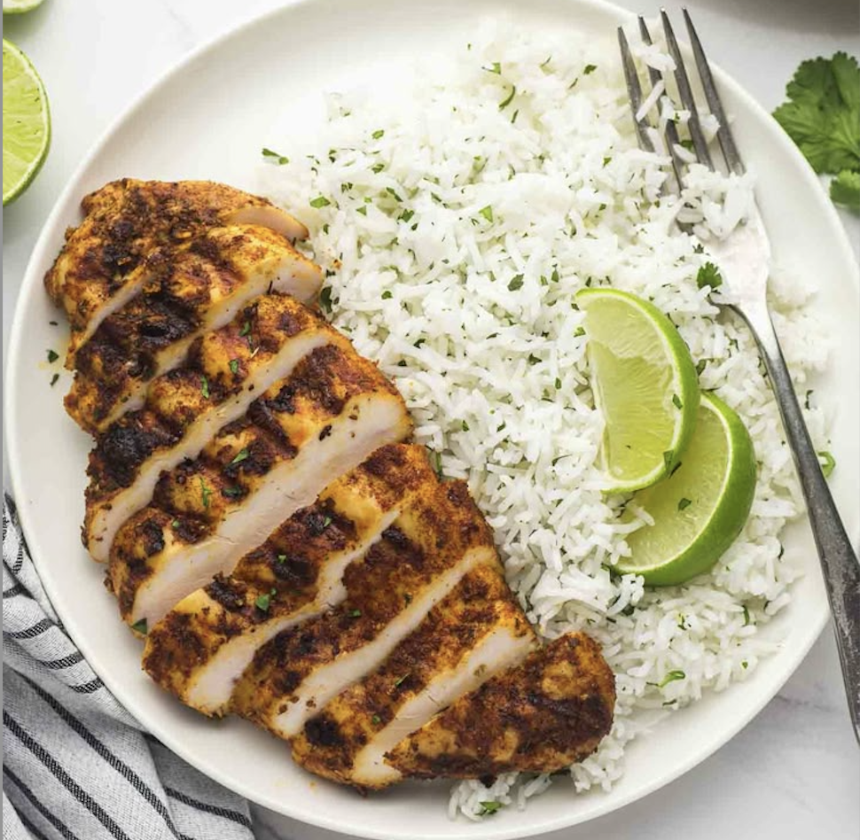

Chipotle Chicken & Cilantro Rice
With Cotija Cheese & Poblano Pepper
Ingredients
- 2 Chicken Breasts
- 1 Poblano Pepper
- 1/4 Cup Cilantro
- 1/4 Cup Cotija Cheese
- 1 Lime
- 1 Cup White Rice
- 2 Tbsp Chipotle Sauce
Preparation
- Cook the rice and set aside.
- Roast the poblano pepper and prepare the chicken with the chipotle sauce.
- Mix the rice with cilantro and lime, then serve with the cooked chicken and roasted pepper.
- Garnish with Cotija cheese and additional cilantro if desired.